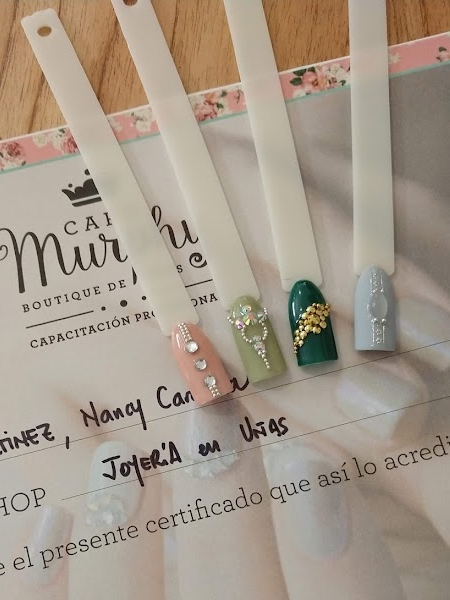
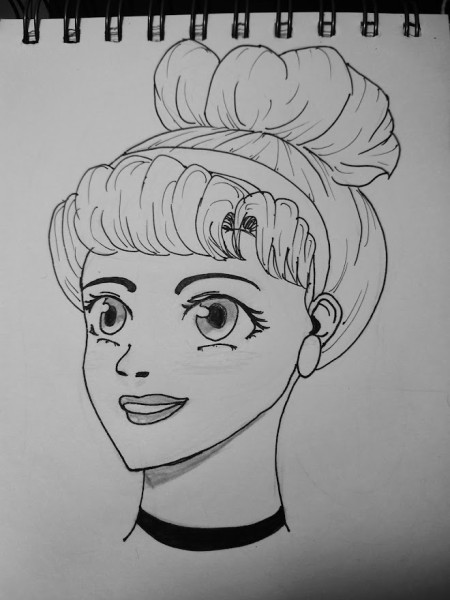

Un poco de mí
Zoe nailart nació en Abril de 2018. Luego de muchos años en el rubro decidimos lanzarnos a la aventura y tener el local que siempre habíamos soñado.
Nuestro espacio rodeado de flores y con una marcada influencia femenina nos inspira diariamente a crear y a desarrollar nuestra imaginación, cuidando la higiene y ofreciendo arte en uñas esculpidas. Tratamos de entrenarnos constantemente y nutrirnos de nuevas técnicas y diseños a nivel global.
Trabajamos esta en gel y soft gel ya que nos parece la manera más limpia y prolija de realizar las uñas. No usamos tips. Construimos directamente sobre el diseño natural de tus uñas y así obtenemos un producto que se ajusta exactamente a tus necesidades. Utilizamos moldes para uñas estructurales siendo esto lo más higiénico ya que se descartan luego de su uso y construimos con monómero y polímero previa deshidratación de la uña natural y limado de la misma para tener una superficie rugosa de donde el acrílico pueda aferrarse. Finalizamos en gel para darle a tus uñas un acabado brillante y duradero.
El diseño lo elegís vos, nos traes referencias y nosotras te guiamos. A su vez elegís forma y largo. Tenemos todo tipo de clientas, con uñas sanas o muy mordidas, y trabajamos en función de eso, se puede crear lo que vos quieras, no hay límites para eso! También te brindamos toda la información necesaria sobre tus nuevas uñas, mantenimiento, cuidado casero, sobre su construcción y sobre su retirado.
